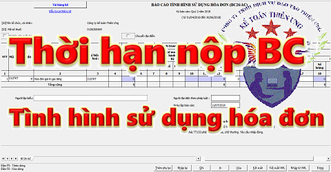

Quy định về thời hạn nộp Báo cáo tình hình sử dụng hóa đơn theo quý - theo tháng. Trường hợp nào thì nộp Báo cáo sử dụng hóa đơn theo tháng - theo quý. Thời hạn nộp Báo cáo khi chuyển địa điểm kinh doanh, giải thể, chia, tách ...
Theo điều 27 Thông tư 39/2014/TT-BTC (được hướng dẫn bởi Mục III Công văn 2010/TCT-TVQT và sửa đổi bổ sung theo Khoản 4 Điều 5 Thông tư 119/2014/TT-BTC) quy định về thời hạn nộp Báo cáo tình hình sử dụng hóa đơn, cụ thể như sau:
Hàng quý, tổ chức, hộ, cá nhân bán hàng hóa, dịch vụ (trừ đối tượng được cơ quan thuế cấp hóa đơn) có trách nhiệm nộp Báo cáo tình hình sử dụng hóa đơn cho cơ quan thuế quản lý trực tiếp, kể cả trường hợp trong kỳ không sử dụng hóa đơn.
- Trường hợp trong kỳ không sử dụng hóa đơn, tại Báo cáo tình hình sử dụng hóa đơn ghi số lượng hóa đơn sử dụng bằng không (=0).
Hạn nộp báo cáo tình hình sử dụng hóa đơn theo Quý:
Quý I nộp chậm nhất là ngày 30/4.
Qúy II nộp chậm nhất là ngày 30/7.
Qúy III nộp chậm nhất là ngày 30/10.
Qúy IV nộp chậm nhất là ngày 30/01 của năm sau.
- Báo cáo tình hình sử dụng hóa đơn phải được làm theo Mẫu BC26/AC (mẫu số 3.9 Phụ lục 3 ban hành kèm theo Thông tư 39). => Các bạn nộp qua mạng thì làm trực tiếp trên phần mềm HTKK mới nhất.
Chi tiết: Cách lập báo cáo tình hình sử dụng hóa đơn theo quý.
------------------------------------------------------------
Thời hạn nộp báo cáo sử dụng hóa đơn theo Tháng:
Riêng doanh nghiệp mới thành lập, doanh nghiệp sử dụng hóa đơn tự in, đặt in có hành vi vi phạm không được sử dụng hóa đơn tự in, đặt in, doanh nghiệp thuộc loại rủi ro cao về thuế thuộc diện mua hóa đơn của cơ quan thuế theo hướng dẫn tại Điều 11 Thông tư số 39/2014/TT-BTC thực hiện nộp Báo cáo tình hình sử dụng hóa đơn theo tháng.
- Trường hợp doanh nghiệp nộp báo cáo tình hình sử dụng hóa đơn theo tháng thì doanh nghiệp không phải nộp báo cáo tình hình sử dụng hóa đơn theo quý.
- Thời hạn nộp Báo cáo tình hình sử dụng hóa đơn theo tháng chậm nhất là ngày 20 của tháng tiếp theo.
- Việc nộp Báo cáo tình hình sử dụng hóa đơn theo tháng được thực hiện trong thời gian 12 tháng kể từ ngày thành lập hoặc kể từ ngày chuyển sang diện mua hóa đơn của cơ quan thuế. Hết thời hạn trên, cơ quan thuế kiểm tra việc báo cáo tình hình sử dụng hóa đơn và tình hình kê khai, nộp thuế để thông báo doanh nghiệp chuyển sang Báo cáo tình hình sử dụng hóa đơn theo quý. Trường hợp chưa có thông báo của cơ quan thuế, doanh nghiệp tiếp tục báo cáo tình hình sử dụng hóa đơn theo tháng.
--------------------------------------------------------
Tổ chức, hộ, cá nhân bán hàng hóa, dịch vụ có trách nhiệm nộp báo cáo tình hình sử dụng hóa đơn khi chia, tách, sáp nhập, giải thể, phá sản, chuyển đổi sở hữu; giao, bán, khoán, cho thuê doanh nghiệp nhà nước cùng với thời hạn nộp hồ sơ quyết toán thuế.
Trường hợp tổ chức, hộ, cá nhân chuyển địa điểm kinh doanh đến địa bàn khác địa bàn cơ quan thuế đang quản lý trực tiếp thì phải nộp báo cáo tình hình sử dụng hóa đơn với cơ quan thuế nơi chuyển đi.
Chi tiết: Xử lý hóa đơn khi chuyển địa chỉ công ty
--------------------------------------------------------------------
Hóa đơn thu cước dịch vụ viễn thông, hóa đơn tiền điện, hóa đơn tiền nước, hóa đơn thu phí dịch vụ của các ngân hàng, vé vận tải hành khách của các đơn vị vận tải, các loại tem, vé, thẻ và một số trường hợp khác theo hướng dẫn của Bộ Tài chính không phải báo cáo đến từng số hóa đơn mà báo cáo theo số lượng (tổng số) hóa đơn theo mẫu 3.9 Phụ lục 3 ban hành kèm theo Thông tư số 39/2014/TT-BTC. Trong đó không phải điền dữ liệu vào các cột chi tiết từ số đến số, chỉ điền dữ liệu vào các cột số lượng hóa đơn.
Cơ sở kinh doanh phải hoàn toàn chịu trách nhiệm trước pháp luật về tính chính xác của số lượng hóa đơn còn tồn đầu kỳ, tổng số đã sử dụng, tổng số xoá bỏ, mất, hủy và phải đảm bảo cung cấp được số liệu hóa đơn chi tiết (từ số…đến số) khi cơ quan thuế yêu cầu.
----------------------------------------------------------------
- Trường hợp tổ chức kinh doanh, doanh nghiệp trong một kỳ báo cáo có hai loại hóa đơn (hóa đơn do tổ chức kinh doanh, doanh nghiệp tự in, đặt in và hóa đơn mua của cơ quan thuế) thì thực hiện báo cáo tình hình sử dụng hóa đơn trong cùng một báo cáo.
-----------------------------------------------------------
Nếu chẳng may các bạn chậm nộp BC THSDHĐ thì các bạn xem thêm mức phạt nhé:
Mức phạt chậm nộp báo cáo tình hình sử dụng hóa đơn
Chúc các bạn làm tốt!
-----------------------------------------------------------------------------------------------
